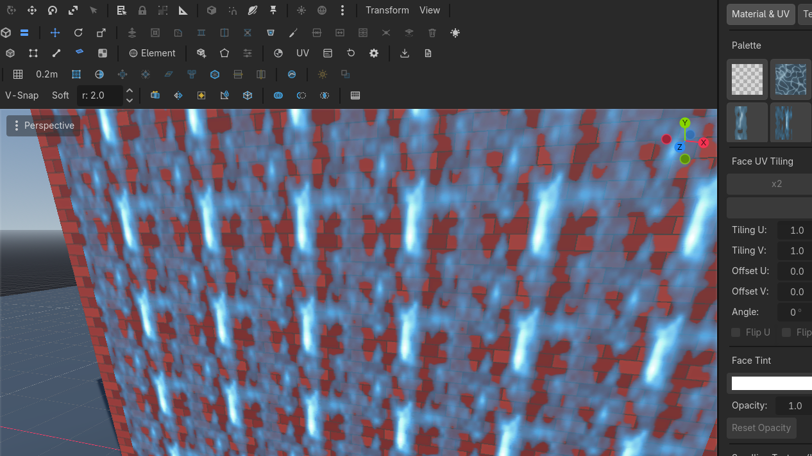

Materials
Per-face materials, auto-UV that does not stretch on resize, and a dock that is also the paint bucket.
The dock
Toolbar MaterialRow 2 · DocksMaterial & UVFocuses the Material & UV dock: palette, splat painting, stamps, sprites, particles.Needs: Nothing focuses the Material & UV dock. It is six modes on one segmented row:
| Mode | What it does |
|---|---|
| Material & UV | The palette below — per-face assignment, drag-and-drop, UV speed. |
| Texture Paint | The splat brush — see Paint & stamps. |
| Stamp | Decal stamps in one click. |
| Sprite | Always-armed billboard placement. |
| Shapes | Always-armed primitive placement: pick a shape, drag it on any surface. |
| Particles | Click-to-place particle emitters (PSP-budget aware). |
The palette itself:
- Swatch grid of project materials.
- Click a face (face or texture mode), click a swatch — that face takes the material.
- Drag a texture from the FileSystem dock onto a face.
- + Add pulls a material or texture from anywhere in the project; the scan deduplicates by content so one texture does not appear twice.
Texture mode (6) transforms the selected faces' UVs in 3D with the same gizmo — see Texture mode. For island work, use the 2D UV editor.
Auto-UV
New shapes unwrap with a 1×1 m repeat. Rules the plugin keeps:
- Resize does not stretch — UVs stay locked to object space, so a 2 m wall still shows 2 tiles.
- Coplanar faces share a seam anchor, so a merged wall does not crawl.
- Diagonal faces tile along their plane, not a projected smash.
If a ramp still looks stretched, that is a projection job: UV editor.
Smoothing
Auto SmoothRow 3 · Selection SuiteAuto SmoothUnbound (rebindable)Auto-smooths faces by dihedral angle (45°).Needs: A PBMesh (row 3) sets smoothing groups from a 45° dihedral. Hard edges stay hard; shallow joins pick up shared normals. Lighting, not geometry.
Particle emitters
The dock's Particles tab places stateless particle emitters: pick a particle texture (flame, smoke, glow presets arm themselves), click a surface, drag to lift and tune, click to commit — the click-by-click lives in the modern walkthrough. Fine-tune any placed emitter by selecting it and opening ⚙ Edit Emitter Properties on the overlay (count, size, speed, spread, additive blending, flipbook grid).
What "stateless" means, and why it is the headline: an emitter is authored as an ordinary GPUParticles3D for the editor, but its playback is a closed form — particle i at time t is a pure function of (t, i, seed). There is no simulation to tick and no per-particle state to keep:
- deterministic — the same emitter always produces the same fire, so what you preview is what every consumer shows;
- cheap — a runtime re-derives each particle with a few flops, one draw call per emitter, no per-frame CPU cost that grows with age;
- additive emitters need no depth sorting; blended ones draw back-to-front;
- exportable as data — the retro
.pbmcarries a standardemitterslump and a modern.glbtags each emitter node with apoi_emitterrecord in its glTF extras (count, colors, spread — the whole authoring), so your engine rebuilds the identical effect instead of eyeballing it.
Placement knobs are budget-aware for the retro target: 64 particles per emitter and roughly 256 per map. See Export & retro for what ships and the format spec for the lump layout.
Scroll
A material can carry a UV scroll speed (repeats per second, per axis, signed). It plays in the editor viewport and survives export as data: per-mesh uv_scroll in the retro formats, poi_uv_scroll in a modern GLB material's glTF extras. The animation itself is the consumer's one-liner (uv(t) = uv(0) + t · speed) — the recipes are on Export & retro. Waterfalls are a scrolling plane, not a shader graph.

Related: Paint & stamps, UV editor.
Textures that "slide" when you extrude were a bug class. Extrude is supposed to continue tiling across the new seam. If it does not, file it — do not compensate by hand-scaling UVs on every extrude.